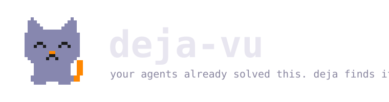

Persistent memory for your coding agents.
curl -fsSL https://raw.githubusercontent.com/vshulcz/deja-vu/main/install.sh | sh

Agent memory via MCP
One deja install --all and your agent gets a recall tool. Next session it answers “we fixed this three weeks ago” instead of re-debugging. Responses stay under ~4KB — cheap on context.
One index, every harness
Claude Code, Codex CLI and opencode all write session logs to your disk. deja indexes them together — a solution found in Codex is recalled inside Claude Code.
Local and private
No network code exists in the tool. Local files in, local cache out. Warm search over gigabytes of history in under 100 ms.
Install
curl -fsSL https://raw.githubusercontent.com/vshulcz/deja-vu/main/install.sh | sh
brew install vshulcz/tap/deja-vu
go install github.com/vshulcz/deja-vu/cmd/deja@latest
npx @vshulcz/deja-vu "your query"
How it works
deja parses the local history stores each harness already writes (~/.claude/projects, ~/.codex/sessions, opencode's SQLite db) into an incremental inverted index in ~/.cache/deja. Cold index over ~3GB takes about ten seconds, once; after that searches are 45–97 ms and only changed files get re-read. The MCP server exposes the same index to agents as recall and recall_context. Single Go binary, zero runtime dependencies. Details in ARCHITECTURE.md.